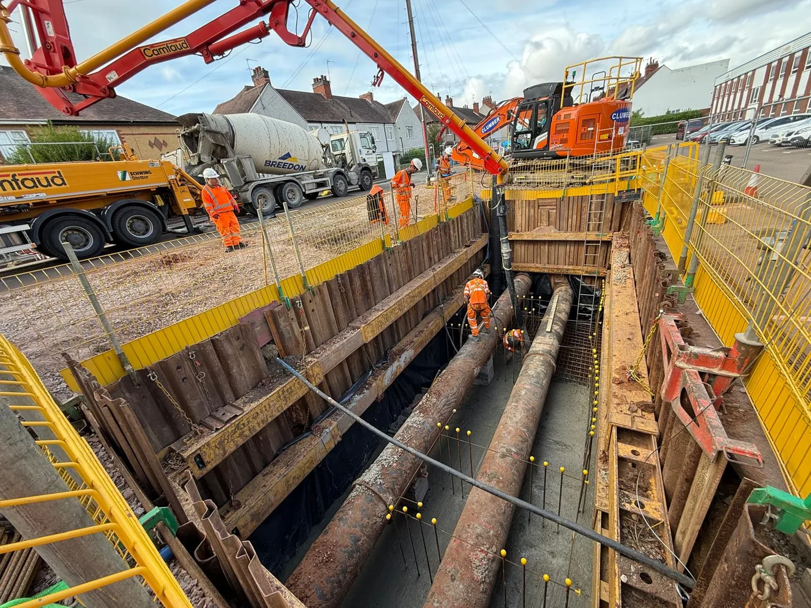

Infrastructure
Structural civil engineering works forming the backbone of development projects, from foundations to large-scale public infrastructure.
Retford, Nottinghamshire — Est. 2008
Civil engineering and construction subcontractor delivering infrastructure, drainage, highways and earthworks across the Midlands, the North of England, and the wider UK.
Who We Are
Established as a company in 2008 and based in Retford, Nottinghamshire, Clumber Construction delivers small to medium sized civil engineering and construction projects throughout the Midlands, the North of England, and the wider UK — primarily working as a trusted subcontractor to the country's leading main contractors.
Our reputation is built on reliability, technical capability, and the kind of attention to detail that comes from decades on site. From groundbreaking to final handover, we deliver work that main contractors are confident to put their name to.

What We Do
From initial groundworks to final surfacing, we deliver civil engineering solutions that are built to last.
Structural civil engineering works forming the backbone of development projects, from foundations to large-scale public infrastructure.
Surface water, foul drainage, and sustainable drainage systems (SuDS) — installed to specification, from small residential to large commercial.
Road construction, kerbing, surfacing, and large-scale earthmoving works undertaken by experienced operators and project managers.
Groundworks, enabling works, and civil engineering packages for residential and commercial development sites across the UK.
Accreditations
Independently assessed and approved against the industry standards main contractors require.
Get in touch to talk about upcoming work, capability, and availability.
Contact Us